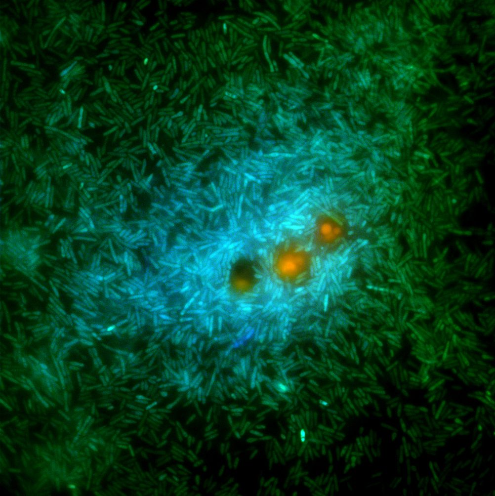

Meet Thrives.

Thrives' Bio
Microorganisms make up about 70% of the marine biomass
Microorganisms are crucial to nutrient recycling in ecosystems as they act as decomposers
Marine microbes can be “the canary in the coal mine” for the marine environment.